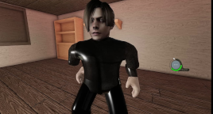

Minhas redes sociais
Quem sou eu?

Meu nome é o Leon S. Kennedy, um policial durão que já passou por muita coisa. Desde o momento em que entrei na Academia de Polícia, sabia que meu destino estava ligado ao caos e ao perigo. Com o tempo, me tornei um agente do Serviço de Segurança e Resgate dos Estados Unidos, o famoso USS.
Minha primeira grande missão foi em Raccoon City, enfrentando aquela terrível epidemia de zumbis. Acredite, aquilo foi de arrepiar! Sobreviver àquele pesadelo foi um desafio, mas consegui superar com coragem e determinação.
Como falar comigo?
 /youtube - Se inscreve lá no meu canal do YouTube
/youtube - Se inscreve lá no meu canal do YouTube /github - Acessa meu repositório público no github
/github - Acessa meu repositório público no github /instagram - Me segue lá no Instagram
/instagram - Me segue lá no Instagram /linkedin - Me adiciona lá no linkedin
/linkedin - Me adiciona lá no linkedin /twitter - Me segue lá no twitter
/twitter - Me segue lá no twitter /facebook - Me adiciona lá no facebook
/facebook - Me adiciona lá no facebook